variables typs:
-
integer - Stores whole numbers without decimal points, like 5, -10, or 0.
-
float - Stores decimal numbers, like 3.14, -0.5, or 2.0.
-
string - Stores sequences of characters, enclosed in single or double quotes, like "hello" or 'Python'.
-
char - In Python, characters are represented as strings of length 1. For example, 'a', 'X', or '&'. However, Python doesn't have a separate char type like some other languages.
-
boolean - Represents truth values, either True or False.
______________________________________________
Python
Python is one of the most populer today, known on her syntex taht is very similer to natural language, making it easy to learn and understand, even for begginers. The language encourages clean writing and readable code, wich leads to fewer errors easier maintenace.
______________________________________________
How to print strings in pyhon:
In Python you can print strings using the 'print()' function.
Here's how you can use it:
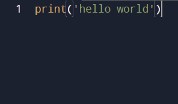
______________________________________________
What is if else statement in python:
In Python, the if else statement is used for decision-making. It allows you to execute different blocks of code based on whether a condition is true or false.
If the condition specified after if is true, the code block under if is executed; otherwise, the code block under else is executed. It provides a way to choose between two different courses of action based on a condition.
In python thers another condition called 'elif':
elif is short for "else if" in Python. It's used in conjunction with if and else statements to check multiple conditions sequentially.
Here's how you can use that:
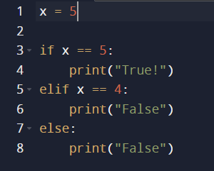
______________________________________________
What is while and for loops in python:
while loop: Repeats a block of code as long as a specified condition is true.
for loop: Iterates over a sequence (like a list, tuple, string, etc.) or any iterable object,or, It executes the block of code for each item in the sequence, iterating over it until the end of the sequence is reached.
Here's how you can use that:
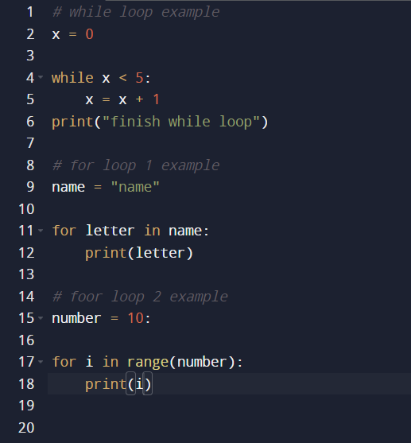
______________________________________________
What is Lists and 2D Lists (matrix) in python:
Lists: A list is a collection of items that are ordered and changeable. It allows duplicate members.
2D Lists (matrix): A 2D list is a list of lists, where each sublist represents a row in a 2-dimensional structure (like a matrix or a table).
Here's how you can use that:
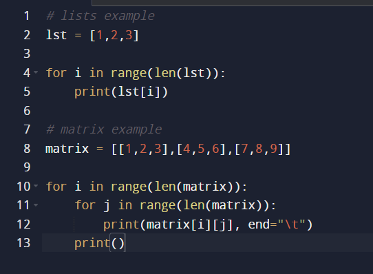
______________________________________________
What is function in pytho:
A function in Python is a block of reusable code that performs a specific task. Functions help to modularize and organize code, making it more readable, maintainable, and reusable.
Function Definition: A function is defined using the def keyword followed by the function name and parentheses (). If the function takes parameters, they are listed inside the parentheses.
Function Body: This is the block of code that performs the task. It is indented under the function definition.
Return Statement: Optionally, a function can return a value using the return keyword.
Here's how you can use it:
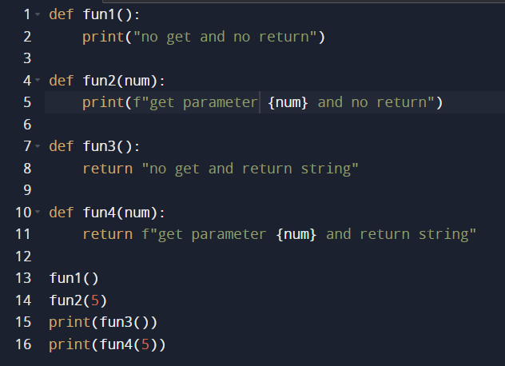
______________________________________________
variables typs:
-
integer - JavaScript does not have a specific integer type. Instead, it uses the Number type to represent both integers and floating-point numbers.
Examples: 42, -7, 0.
-
float - JavaScript does not have a specific integer type. Instead, it uses the Number type to represent both integers and floating-point numbers.
Examples: 42, -7, 0.
-
string - Represents a sequence of characters (text) enclosed in single quotes ('), double quotes ("), or backticks (`).
Examples: 'hello', "world", `JavaScript`.
-
JavaScript does not have a specific char type. Instead, single characters are treated as strings of length one.
Example: 'a' (which is a string containing one character).
-
boolean - Represents a logical entity with two values: true or false.
Examples: true, false.
______________________________________________
Java Script
JavaScript is the de facto language of the web. Every major browser supports JavaScript, making it essential for front-end development.
Full-Stack Development: With the advent of Node.js, JavaScript can be used for both client-side and server-side development, allowing developers to use a single language across the entire stack.
______________________________________________
How to print strings in Java Script:
In JavaScript, you can print strings to the console using the console.log() function.
Here's how you can use it.
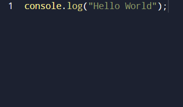
______________________________________________
What is if else statement in Java Script:
An if-else statement in JavaScript is a control flow statement that allows you to execute certain blocks of code based on a condition. Here's a brief explanation:
if statement: Checks a condition, and if the condition is true, executes a block of code.
else statement: Provides an alternative block of code that executes if the if condition is false.
else if statement: Checks another condition if the previous if condition is false.
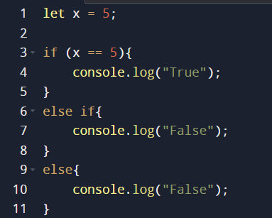
______________________________________________
What is while, for and do while loops in Java Scrip:
Repeats a block of code as long as a specified condition is true.
Repeats a block of code a specific number of times, often using a counter.
Executes a block of code once, and then repeats the loop as long as the specified condition is true. The condition is evaluated after the execution of the loop.
Here's how you can use it:
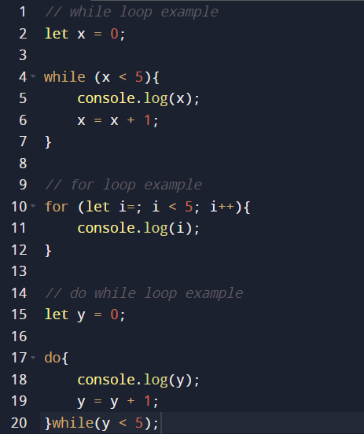
______________________________________________
An array/List in JavaScript is a collection of elements, each identified by an index. Arrays can store multiple values in a single variable and can contain elements of any data type.
A 2D array/List is an array of arrays. It can be visualized as a table or a matrix with rows and columns.
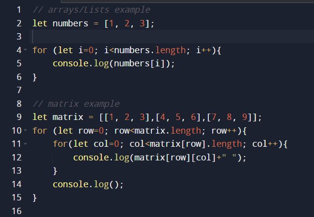
______________________________________________
What is functions in Java Script:
In JavaScript, functions are blocks of reusable code that perform a specific task. Functions allow you to encapsulate a piece of code and execute it whenever needed, making your code more organized, modular, and easier to maintain.
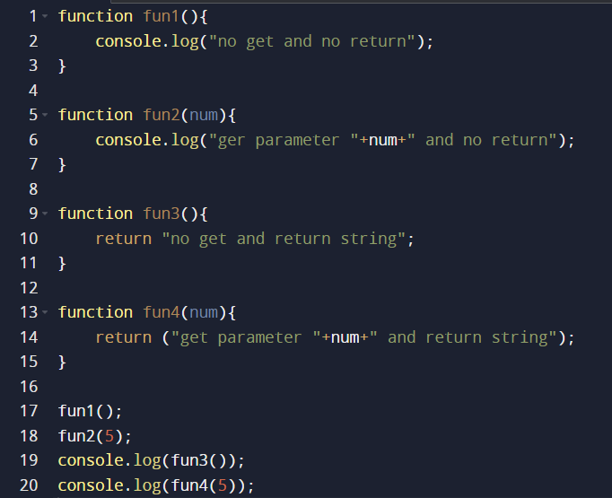
______________________________________________
variables typs
-
integer - In Java, int is a data type representing integer numbers (whole numbers without fractional parts). It's used to store numbers like -5, 0, 42, etc. Java also has other integer types like byte, short, and long which represent integers of different sizes.
-
float - In Java, float is a data type representing floating-point numbers. Floating-point numbers are numbers that have a decimal point or are represented in exponential form. For example, 3.14, -0.001, 1.0E5, etc. Java also has double data type for representing double-precision floating-point numbers which is more commonly used.
-
string - String is a class in Java representing a sequence of characters. It's used to store text. For example, "Hello, World!", "Java is awesome!", etc. Strings in Java are immutable, meaning once created, they cannot be changed.
-
char - char is a data type representing a single character. It stores a single 16-bit Unicode character. For example, 'a', '7', '&', etc.
-
boolean - boolean is a data type representing true or false values. It's used for logical operations and conditions. In Java, boolean variables can have only two possible values: true or false.
______________________________________________
Java
Java's combination of portability, strong ecosystem, reliability, and scalability makes it a preferred choice for a wide range of applications, including web development, enterprise software, mobile apps, scientific computing, and more.
______________________________________________
How to print strings in Java:
Printing strings in Java is quite straightforward. You can use the System.out.println() method to print strings to the console.
Here's how you can use that:
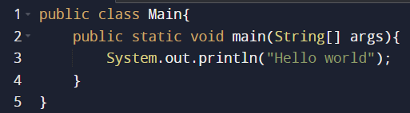
______________________________________________
What is if else statement in Java:
The if-else statement in Java is used to make decisions based on conditions.
if: It is used to execute a block of code only if the condition specified is true.
else: It is used to execute a block of code if the same condition specified in the if statement is false.
else if: It is used to specify multiple conditions. If the condition specified in the if statement is false, it checks the else if condition.
Here's how you can use that.
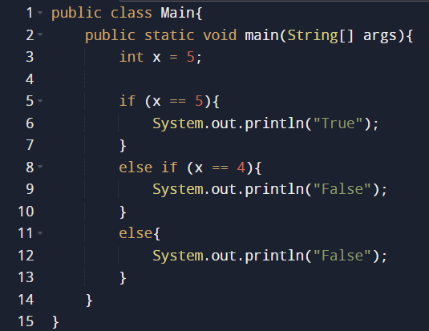
______________________________________________
What is while, for and do while in Java:
while loop: The while loop repeats a block of code as long as a specified condition is true.
for loop: The for loop is used to iterate over a range of values or to iterate based on a condition.
do-while loop: The do-while loop is similar to the while loop, but it always executes the block of code at least once before checking the condition.
Here's how you can use that:
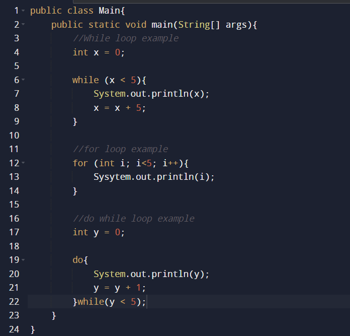
______________________________________________
What is arrays and 2D arrays(matrix) in Java:
Arrays in Java are used to store multiple values of the same type in a single variable. An array is a fixed-size data structure.
2D arrays in Java are arrays of arrays, used to represent a matrix or a table.
Here's how you can use that:
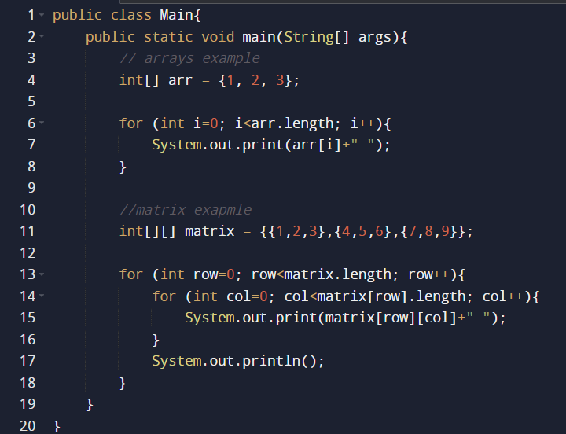
______________________________________________
What is functions in Java:
In Java, functions (also known as methods) are blocks of code designed to perform specific tasks. They help in organizing and reusing code efficiently.
A function in Java is a block of code that performs a specific task and is defined within a class.
Functions can take inputs (parameters) and can return a value.
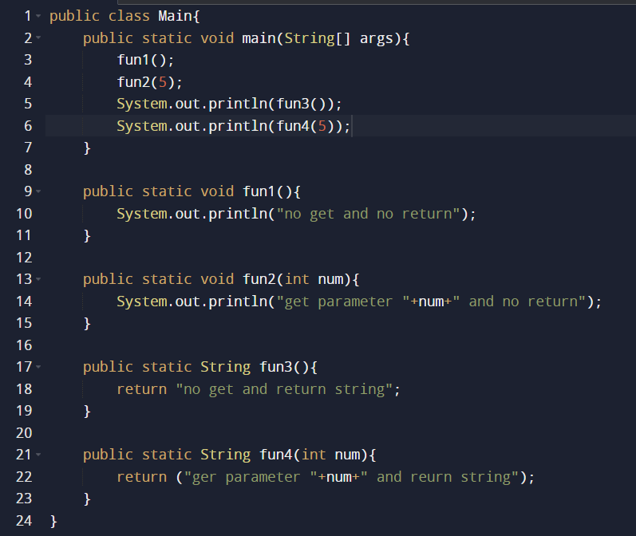
______________________________________________